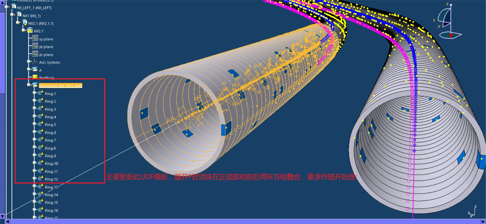
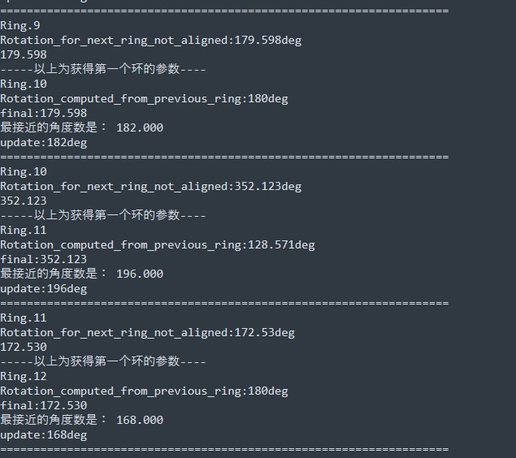

主页
此主页内容为私人分享；主要分享个人工作中集成的工具和方法论；
此主页分享的程序全部为批处理程序，无任何操作界面，所有的工具采用开源脚本或者 bat程序进行控制；
CATAECTunnelArrayRing
本程序主要是创建管片排布的初步模板
使用方法
输入条件为 文件位置 模板位置 线路所在的几何图形集名称 管片数量
如果需要修改每个环的角度避开通缝和F块底部位置需要使用其他更新程序；
@echo ===================================
set CATEnvName=Env9_GT
Set CATEnvPath="%~dp0\CATEnv"
set ModuleName=CATAECTunnelArrayRing.exe
set p1=G:\CODE\CATIA-CAA-B27-AEC-CIVIL-BATCH\win_b64\startup\Tunnel\Part1.CATPart
set p2="%~dp0win_b64\startup\Tunnel\TUNNEL-RING-PW-NOREC.CATPart"
set p3="A"
set p4=100
@echo ===================================
CATAECTunnelRingArrayUpdate
本程序主要是更新隧道udf 排布参数 
使用方法
在此 .\batch-CATAECTunnelRingArrayUpdate.bat 文件内填好必要的参数；
set p1=D:\BaiduSyncdisk\PROJECTS\ZJIC-TUNNEL-PROJECT\DELIVERY_DOCUMENTS\PROJECT_MODEL\YONGZHOU_TUNNEL\Part5.CATPart
set p2="Alignment_Set_GEO_AAA"
set p3=28
命令格式：CATAECTunnelRingArrayUpdate.exe C:\Deom.CATPart Alignment_Set_GEO_AAA 28 [options]
- 线路 CATPart 地址
- 几何图形集名称
- 单环对齐孔数量，默认14个,每个环有14个旋转角度
修改以上数据后，双击batch-CATAECTunnelRingArrayUpdate.bat文件即可运行
